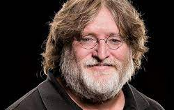
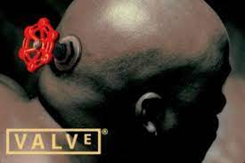
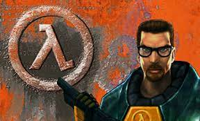
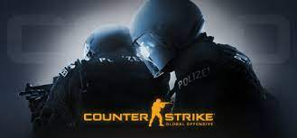
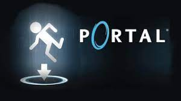
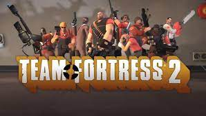
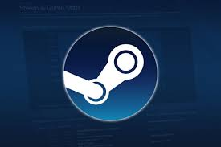
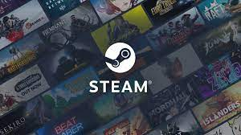
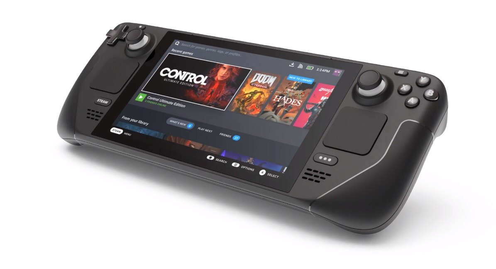
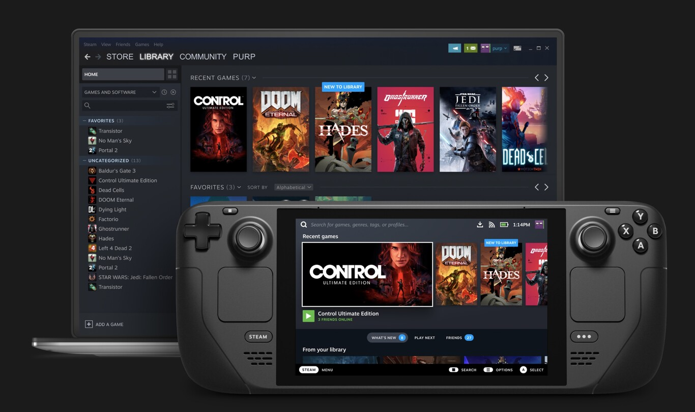

3.- Personaje
Gabe Newell - (Fundaro de Valve y Steam)

Gabe Logan Newell es un diseñador, director y co fundador de Valve Corporation, compañía desarrolladora de videojuegos.
Nacido el 3 de noviembre de 1962, Gabe comenzó estudiando en la prestigiosa Universidad de Hardvard para luego abandonar
sus estudios e irse a Microsoft.
Luego de comenzar a trabajar en Microsoft Newell se incorporó al desarrollo de Windows NT y OS/2 y durante 13 años continuó
desarrollando hasta 1996, cuando decide fundar su propia compañía junto a Mike Harrington, Valve Corporation, Mike era otro
ex-empleado de Microsoft que tenía gran afinidad con los videojuegos y el dinero que habían ganado a través de los años les
sirvió a ambos para desarrollador y lanzar el primer videojuego de la compañía que fue Half Life.
Tras el éxito del primer título rápidamente la compañía se dispuso a desarrollar una secuela y aa la vez comenzaron el desarrollo
de la plataforma de distribución digital Steam; que se convertiría en su producto insignia.
Valve

Valve Corporation, también conocido como Valve Software, es una empresa estadounidense desarrolladora de videojuegos. Se hizo mundialmente
famosa por su primer juego, Half-Life y por una modificación de este, Counter-Strike.
Otros de sus logros más famosos son la creación del motor de videojuego Source, utilizado en gran parte de sus videojuegos, incluyendo
Half-Life 2, Portal, Team Fortress 2, Left 4 Dead, Left 4 Dead 2 y Dota 2 y la creación de la plataforma digital de videojuegos Steam.
Las oficinas centrales de Valve Software se encuentran en Bellevue, Washington, Estados Unidos.
Valve fue fundada en 1996 por Gabe Newell y Mike Harrington. Ambos eran trabajadores del gigante informático Microsoft y habían trabajado
en sus sistemas operativos Windows y OS/2 antes de pasarse al mundo del videojuego. Con Half-Life, su primer videojuego, Valve cosechó un
tremendo éxito obteniendo beneficios de sus expansiones y mods.
En su trabajo junto a la comunidad de jugadores se encuentran títulos como
Counter-Strike o Day of Defeat. En mayo de 2003, Valve Software causó un gran revuelo en la feria Electronic Entertainment Expo al presentar
lo que parecía una versión prácticamente terminada de Half-Life 2.
Juegos mas destacados de Valve
   
Steam

Steam es una plataforma de distribución digital de videojuegos desarrollada por Valve Corporation. Fue lanzada
en septiembre de 2003 como una forma para Valve de proveer actualizaciones automáticas a sus juegos, pero finalmente se amplió para
incluir juegos que no son de Valve sino de terceros.
El servicio principal de Steam es el de permitir a sus usuarios descargar juegos y otro software desde sus bibliotecas de software
virtual a sus ordenadores. Los juegos que son integrados en Steam son almacenados en el disco duro como archivos únicos no comprimidos con la extensión.
Se utiliza tanto por pequeños desarrolladores independientes como grandes corporaciones de software para la distribución de videojuegos y material multimedia relacionado.
Para poder disfrutar de todos estos servicios, es necesario estar registrado en el servicio mediante la creación de una cuenta gratuita, a la que se vinculan
los videojuegos comprados por el jugador. Estos juegos pueden ser tanto los juegos que se ofrecen para la compra en la propia plataforma como ciertos juegos comprados en tiendas físicas.

Steam Deck

La Steam Deck es una videoconsola inspirada en un PC de juegos portátil desarrollada por Valve Corporation. Su lanzamiento está programado para diciembre de 2021 aunque muchos usuarios
la recibiran posteriormente siguiendo el stock de reserva establecido por Valve pudiendo llegar al primer trimestre de 2022.
El Steam Deck de Valve es el “PC gaming de mano” más esperado del mercado. Y es que promete ofrecer un rendimiento sensacional a pesar de su pequeño tamaño, equiparable a una
consola portátil, junto con una excelente experiencia de uso y un precio bajo.

Aportacion de Gabe Newell a la humanidad
Una de las mejores aportaciones de Gabe Newell a la humanidad es la creacion de Steam, ya que la plataforma de steam permite que cualquier persona pueda subir su juego a su plataforma que se actualiza cada dia, esto es muy beneficioso ya que cualquier persona si le pone el esfuerzo a un videojuego y lo sube a su plataforma puede llegar a ganar muchisimo dinero, eso por el sistema que tiene steam y que es considerado la mejor plataforma para publicar y vender juegos, solo con tener conocimientos minimos de programacion y conocimiento en cualquier motor grafico puedes crear un videojuego, no importa lo simple que sea, este tiene la posibilidad de hacerse popular.